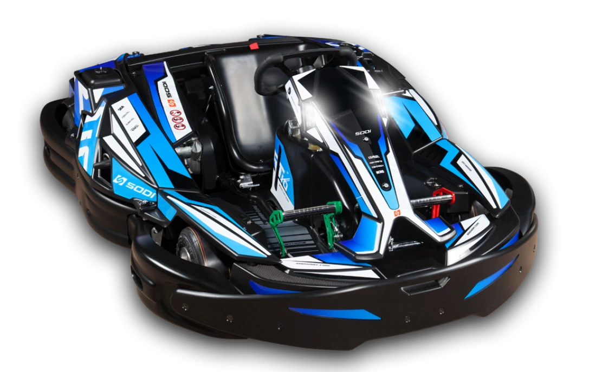
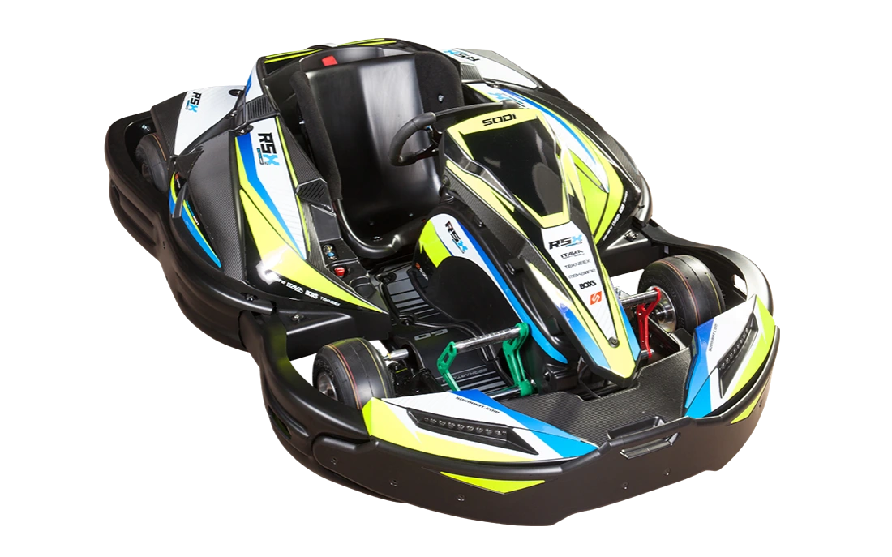

Nuestros Karts
RT10
Este kart es el resultado de 40 años de experiencia y ofrece nuevas sensaciones. Precisión en las curvas, comodidad de dirección y competitividad son las palabras clave de esta innovación que cambiará la experiencia de los pilotos aficionados y experimentados. Con pedales ajustables diseñados para la comodidad de los pilotos, sus protectores de deslizamiento integrales patentados, su sistema único de ajuste del asiento, su dirección de cardán y muchas otras innovaciones, podrás llegar al límite en la pista.
RSX2
Equipado con un nuevo motor más silencioso que su predecesor y con baterías de litio de última generación, el Sodi RSX2 tiene mayor potencia y una autonomía de una hora a velocidad estándar. El nuevo motor síncrono procedente del mundo de la automoción dispone de un control de potencia integrado. La ergonomía del RSX2 incluye un sistema de regulación del asiento y de la columna de dirección que permite ajustar fácilmente la posición de conducción para adaptarla a la morfología de cada persona.
LR5

Un kart diseñado exclusivamente para los conductores jóvenes. Un kart sorprendentemente atractivo, su reconocida fiabilidad y su alto nivel de seguridad lo convierten en el kart favorito de los pilotos más jóvenes. Con un asiento bucket ajustable, pedales ajustables y volante ajustable en altura, el LR5 puede transformarse para proporcionar la posición de conducción para darlo todo dentro de la pista.
Contacto
Ctra. N-430 Km 327,500,
13160 Torralba de Calatrava, Ciudad Real
Horario
Martes - Jueves
10:00 - 20:00
Viernes-Domingo
10:00 - 21:00
Teléfono: 646786032
LinkedIn: Bernardo